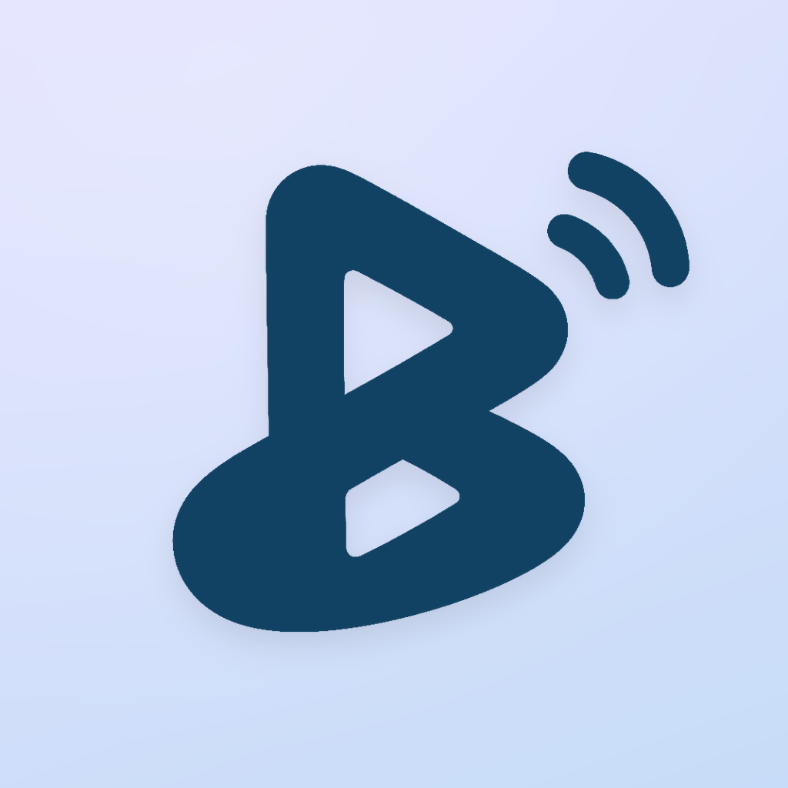

Blueee
Find your Bluetooth devices — nearby or where you last had them. 找到你的蓝牙设备：在身边就带你走过去，丢了就告诉你最后在哪。
What it does
- Remembers where you were when a device connects or disconnects, and shows it on a map.
- Keeps a 24-hour trail so you can retrace your steps.
- Guides you to a nearby device with signal strength, haptics, and optional AR / AirPods direction cues.
- Everything stays on your iPhone. No account, no upload, no analytics.
功能
- 设备连上或断开时记录你所在的位置，并显示在地图上。
- 保留 24 小时轨迹，方便回头找。
- 用信号强度、触感，以及可选的 AR / AirPods 方向提示，带你走到身边的设备。
- 所有数据只保存在你的 iPhone 上。无账号、不上传、无统计。